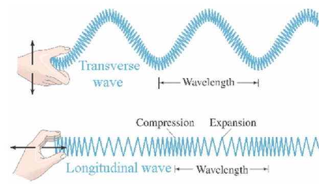
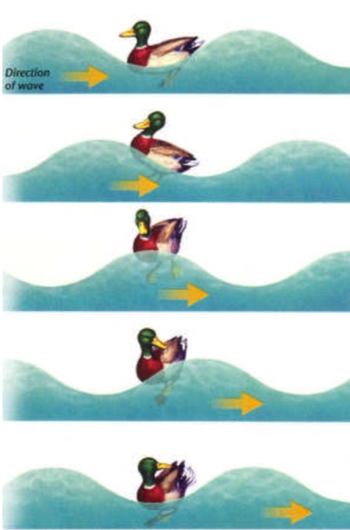
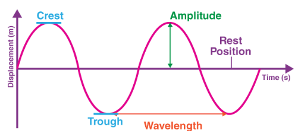
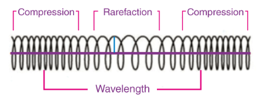
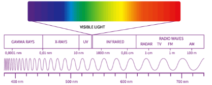
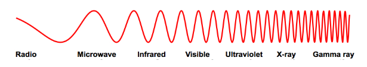

waves
Questions
What is a wave?
A vibration traveling do or don't need a medium to travel through.
What is a median?
The material that air travels through (most times air)
What happens when it travels through a medium?
The wave transfers energy but it does not move the particles (medium). The particles don’t travel along the wave but they move and “jiggle” a bit. The wave itself carries the energy forward
Formulas
$$\lambda \times f = V$$
$$\lambda = \frac{V}{f}$$
$$f = \frac{V}{\lambda}$$
$$T = \frac{\text{time}}{\text{no. of cycles}}$$
$$T = \frac{1}{f}$$
λ = wavelength (m, metre)
f = frequency (Hz, Hertz)
T = period (s, seconds)
V = speed (m/s meter/second)
Types of waves
Mechanical Waves
(Mechanical waves require a medium to travel.)
Transverse VS Longitudinal
The main difference between these two is that the transverse is up and down (like the wave you think of) and the longitudinal is in a line (no height) but it is compressed and expanded in certain parts.
Main difference is up and down versus side and side.
Oscillation
Oscillation is when a wave passes through a particle but it doesn't move when the wave passes. Here's an example:
The duck itself doesn’t move at the end of the wave since the wave just moves through and does not exert any forces on any particle but it just moves (the duck) up and down. (This is simplifying this for now.)
Propagation
The simplest meaning is that when something propagates it moves through a medium and when it does not propagate it doesn't move through a medium (EM).
Transverse Waves
It is a wave in which the particles of the medium vibrate perpendicular to the direction that the wave travels. For example; ripples on the surface of water, plucking a guitar string, etc.
Longitudinal Waves
Longitudinal waves are a type of wave where the particles of the medium vibrate parallel to the direction the wave travels. In simpler terms, the particles in the medium move back and forth in the same direction as the wave propagates.
Mechanical Waves Properties
Crest
The highest point of the wave.
Trough
Lowest point of the wave.
Wavelength
The horizontal distance between two consecutive crests/troughs.
Amplitude
It refers to the intensity or strength of the wave. In a transverse wave it is how far the particles move up or down from their rest position.
Displacement
It is the change in position of an object.
Compression (used in longitudinal)
When the wave is more closer and grouped up.
Rarefaction (used in longitudinal)
When the wave is further and not grouped up.
Wave Height (rarely used)
The length between the crest and the trough
Finding Properties
(Reset Position is also known as an equilibrium)
One cycle is known as when the wave leaves the equilibrium touches the crest and trough and then returns to the equilibrium. (That's one cycle)
- Amplitude (m): The difference between the equilibrium and the crest/trough
- Wavelength(m): Length from two crests (or any two points on two different cycles)
- Period (T): The number of seconds it takes for a single wave to pass
- Speed (v): wavelength x frequency
- Frequency(Hz): The number of waves passing in one second
Two cycles in 8 seconds would result in 0.25 waves every seconds and that would be the frequency (0.25 Hz)
Electromagnetic Spectrum (EM)
EM waves don't need a medium but can travel through a vacuum.
 - Gamma rays
- X-rays
- Ultraviolet (UV)
- Visible light – This is the small portion of the spectrum that our eyes can see.
- Infrared waves
- Microwaves
- Radio waves